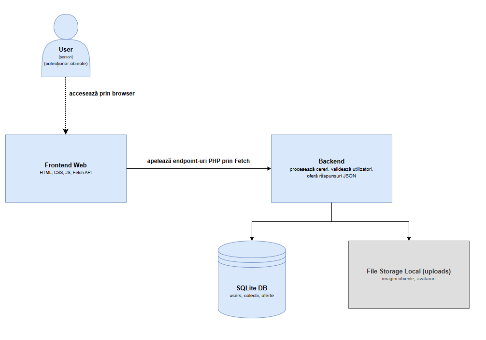
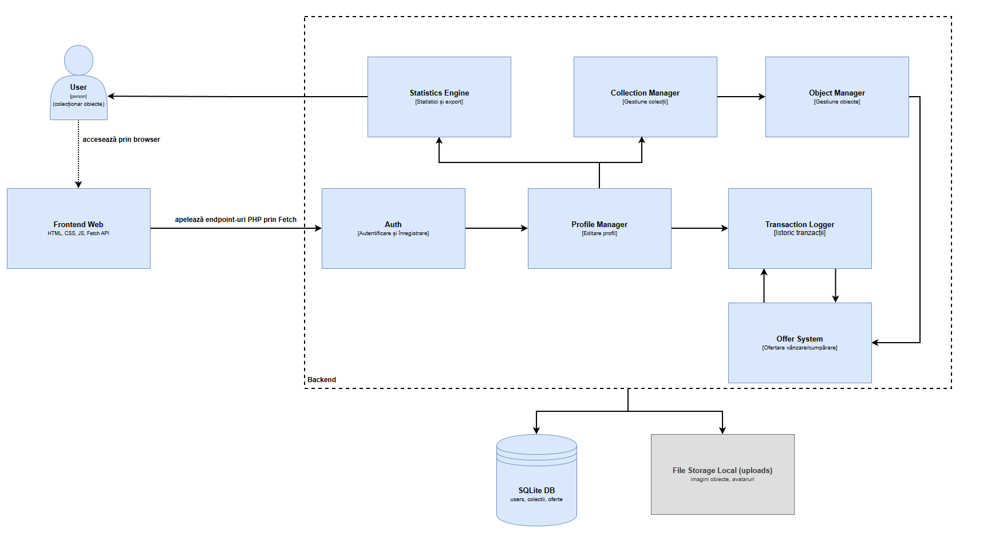
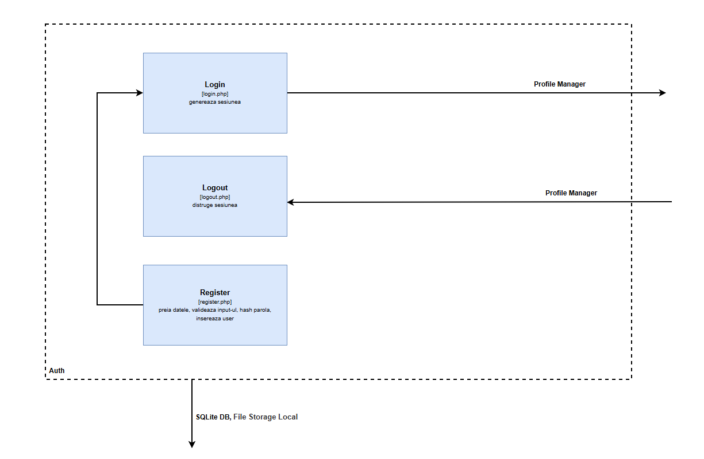

OCo – Obiecte Colecționabile
Abstract
OCo este o aplicație Web care le permite colecționarilor să-și gestioneze obiectele, să le partajeze, să le vândă, să vizualizeze statistici și să interacționeze prin oferte.
1. Introducere
Scopul proiectului este de a oferi o soluție pentru colecționari de obiecte care doresc să își organizeze digital colecțiile.
2. Arhitectură
Arhitectura aplicației este monolitică și a fost documentată folosind modelul C4 (Context, Container, Component, Code).
Diagrama C4 dimensiunea 1- Context
Diagrama C4 dimensiunea 2- Container
Diagrama C4 dimensiunea 3- Component
Diagrama C4 dimensiunea 4- Code
2.1 Componente principale
- Frontend: HTML, CSS, JavaScript (Vanilla)
- Backend: PHP
- Bază de date: SQLite
3. Cerințe Funcționale
- Utilizatorii trebuie să se poată autentifica
- Utilizatorii pot crea colecții și obiecte
- Obiectele pot fi puse la vânzare
- Se pot face și accepta oferte
- Statistici pot fi exportate în CSV/PDF
- Colecțiile pot fi filtrate multi-criterial
3.2 Funcționalitate: Autentificare și criptare
Formularul de login trimite datele la
backend/api/login.php. Parolele sunt criptate cu
password_hash() și validate cu
password_verify(). Datele de sesiune sunt stocate în
$_SESSION.
3.3 Funcționalitate: Creare colecție
Utilizatorul introduce un titlu și o imagine. Acestea sunt validate și
salvate prin adauga_colectie.php, care le asociază cu
$_SESSION['username'].
3.4 Funcționalitate: Adăugare obiect într-o colecție
Utilizatorul selectează o colecție și accesează formularul de adăugare. Completează titlu, imagine, valoare estimată, țară, an, material, perioadă, etichetă, descriere și istoric.
Validările sunt realizate în JavaScript și PHP. Imaginea este
încărcată în assets/uploads iar datele sunt inserate în
tabela obiecte prin
backend/api/adauga_obiecte.php.
3.5 Funcționalitate: Vânzare obiect
Un obiect poate fi scos la vânzare din pagina colecției. Se introduce
prețul, iar obiectul este marcat cu de_vanzare = 1.
Acesta devine vizibil în cumpara_obiecte.php.
3.6 Funcționalitate: Trimitere ofertă
Un utilizator complet autentificat poate trimite o ofertă pentru un
obiect. Se completează un formular cu preț, date contractuale și
adresă, trimis prin trimite_oferta.php spre tabela
oferte.
3.7 Funcționalitate: Acceptare sau refuz ofertă
Proprietarul obiectului accesează lista ofertelor. Prin
accepta_oferta.php obiectul este marcat ca vândut, iar
datele ofertantului devin vizibile.
3.8 Funcționalitate: Filtrare multi-criterială
Se pot aplica simultan filtre pe titlu, valoare, an, țară, etichetă,
material și perioadă atât pentru colecțiile personale, obiectele
scoase la vânzare, cât și pentru vizionarea colecțiilor celorlalți
utilizatori. Filtrarea se face asincron prin
filtru_colectii.php pentru colecțiile personale, prin
filtre_dashboard.php pentru colecțtiile publicate de
ceilalti utilizatori și prin
lista_obiecte_vanzare.php pentru obiectele afișate la
vânzare.
3.9 Funcționalitate: Export statistici în CSV/PDF
Utilizatorii pot exporta statisticile în CSV sau PDF. Cererea este procesată de un script PHP care generează fișierul la cerere pe baza datelor din SQLite.
4. Cerințe Non-Funcționale
- Aplicația rulează local cu XAMPP
- Frontend responsive în HTML/CSS
- Imaginile sunt stocate local
- Codul este open-source sub licență MIT
4.1 Măsuri de validare și securitate
Toate datele sunt validate client-side și server-side. Parolele sunt
criptate, SQL Injection este prevenit cu PDO::prepare(),
iar atacurile XSS sunt limitate cu htmlspecialchars().
5. Interfață și design
Design-ul este minimalist, cu contrast puternic pentru lizibilitate, structurat pe carduri și optimizat pentru mobil. Nu sunt folosite framework-uri externe.
6. Modelare date
users: id, username, password, emailcolectii: id, user, titlu, imagine-
obiecte: id, colectie_id, titlu, descriere, valoare, etc. -
oferte: id, obiect_id, ofertant, pret, adresa, contract -
tranzactii: id, obiect_id, cumparator, data, pret
Datele de test au fost introduse manual pentru a acoperi scenarii variate.
7. Licență
Proiectul este distribuit sub licență MIT. Toate resursele utilizate respectă Creative Commons sau au fost dezvoltate manual.
8. Prezentare video
Demo video